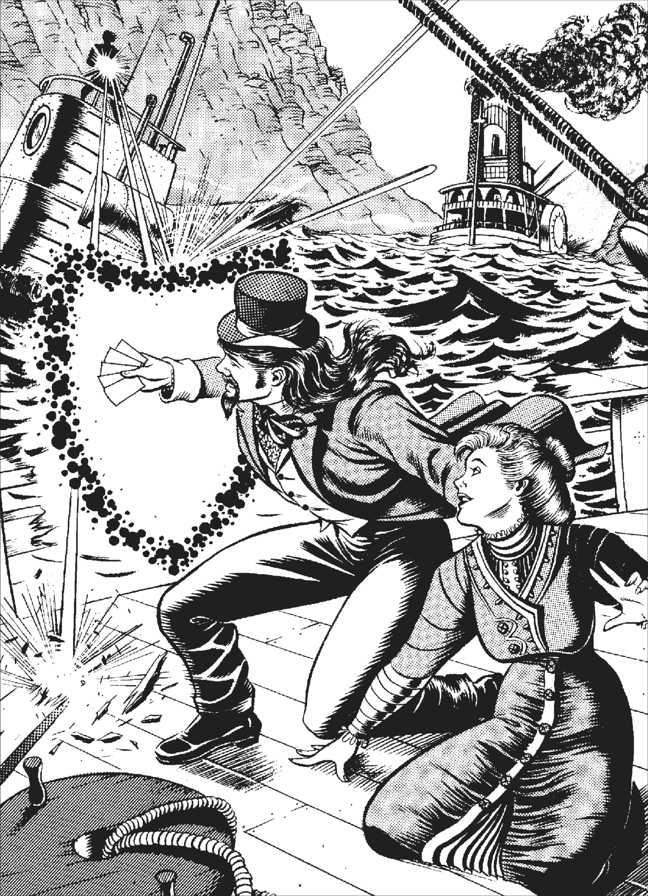

Recently, the world has seen an uptick in strange goings on, many of which could be considered "magic". While it may be true that its prominence has recently increased, practitioners of these arts have existed in some form for centuries.The Marshal should point you to this section if you're interested in these arts. That is, if you've found yourself a good teacher.
Over the years, many special individuals, such as myself, have learned to tap into wells of supernatural power. These folks and their followers have been doing this sort of thing for thousands of years. While some manage to attain world altering abilities, most are content with something that helps out with cleaning the house.
However, "non-enlightened" folks can be quite the superstitious (or jealous) bunch, so most people who were seen asking a broom to sweep the kitchen found themselves hanging in the gallows by sundown.
The roots of the modern huckster lie somewhere around 1740 with a fellow called Edmund Hoyle. Hoyle was already quite the practitioner, and around this time he wandered Europe learning all sorts of arcane traditions and secrets. In order to avoid burning at the stake back home, he used a clever cover story. Hoyle traveled under the guise of collecting all sorts of games from all over the world.
After a while, Hoyle knew more about the supernatural than anyone else alive. He soon realized that casting magic stemmed from mischievious spirits he called "Jokers". These Jokers aren't necessarily the best company, but beating one in a game of wits forces them to carry out a task of some kind. To make these battles of wits easier, Hoyle and many of his followers envision them as games of poker– although any game of skill will do.
Eventually, Hoyle burried his secrets deep in the 1769 copy of Hoyle's Book of Games. Someone who knows what to look for, and has the intelligence to decipher his codes, can learn everything Hoyle knew. Later editions of the book also exist, but the secrets are often diluted by careless editors.
Typically, Jokers cannot affect the physical world, so hucksters temporarily allow the Joker to inhabit their bodies when they win. The downside of this is that Jokers are a tricky bunch. Sometimes, a Joker manages to trick a huckster into allowing the Joker in his body, and then wreaking havok until the huckster casts it out.
There are two ways to become a Huckster. You can find someone to teach you, which takes 3 months where your character spends a portion of every day (4 hours or more) studying with their mentor, or learn directly from Hoyle's book, which requires at least 4 hours a day studying and practicing for 6 months. Additionally, if a character is teaching themselves, they must make an Onerous (7) academia: occult roll at the end of every month. If they fail, a Joker teaches them a lesson, and they take 3d6 damage to the guts.
+2 to all gambling rolls
A huckster looking to cast a hex first makes a roll with the hexslingin' aptitude. If they manage to pass at least a Fair (5) success, they have made contact and can begin a game. They then draw 5 cards from a 54 card (with jokers) deck, plus one more for every raise (5 over the tn). Their goal is to put together the best poker hand they can with the cards they drew. Both jokers are wild cards, but the Black Joker allows the Marshal to roll on the backlash table.
Below is a list of hexes, as well as the hands needed to cast them. Each description has a Trait, Hand, Speed, Duration, and Range. Trait is the Trait, or stat, used with the hexslingin' roll. Hand is the minimum hand required to cast the hex. Speed is the number of actions it takes to cast the hex. Duration is how long the effects of the hex last. Concentration means the huckster can only take simple actions like moving or resisting tests of will while the hex is active. Some hexes cost wind to keep active. If a hex has concentration and wind as a duration, this means the huckster must concentrate or pay wind, but not both. Range is the range at which the hex is active.
A starting Huckster starts with as many hexes as his or her hexslingin' aptitude.
Trait: Knowledge
Hand: Two pair
Speed: 2
Duration: Concentration
Range: 1 mile/hexslingin' level
This hex lets the huckster talk to critters and varmints. He can’t talk to monstrous abominations, only natural animals. The call goes out to specific types of creatures, such as bats, rats, wolves, bears, etc.
When the animals show up, they do the caster’s bidding as long as he continues to concentrate. The moment he lets go, vermin and lesser varmints vanish. Wolves, bears, and the like either flee or attack the closest target depending on the situation.
Varmints aren’t too smart. They do whatever the huckster wants to the best of their abilities, about like a welltrained dog. Don’t expect them to figure out how to fire a weapon or start speaking Portuguese.
Varmints also have to make guts checks against supernatural opponents, just like anyone else. That’s why it’s not much use to throw wolves at some creature from the grave. They just run away with their tails between their legs.
The huckster doesn’t actually summon the varmints—he just calls to them. If there are none around, nothing happens, even if he draws a Royal Flush. The Marshal has to determine if the type of creatures the huckster is calling are within his range.
The type and number of creatures the huckster wants to call determines the hand he needs.
Trait: Smarts
Hand: Pair
Speed: 1
Duration: Concentration or 1 wind/round
Range: 5 yards/hexslingin' level
This hex allows a huckster to enhance a target’s (or his own) physical abilities, making him stronger, faster, nimbler, tougher, or more dexterous. The huckster decides which one of the target’s physical Traits he wants to tweak before casting. The hex raises a target’s Traits by a number of steps according to the hands listed on the table below.
Trait: Smarts
Hand: Pair
Speed: 1
Duration: Concentration or 1 Wind/round
Range: 5 yards/hexslingin' level
Corporeal twist is the opposite of corporeal tweak. It lowers a target’s Traits by one die type for each of the hands listed under corporeal tweak. Once the die type has dropped to a d4, the Trait Level drops by 1 for each level to a minimum of 1d4.
Trait: Cognition
Hand: Pair
Speed: 1
Duration: Concentration or 1 Wind/round
Range: 1 mile/hexslingin' level
A huckster can use this hex to hear through a subject’s ears
If the victim makes an Onerous (7) Spirit roll when the hex is first cast, he knows something’s wrong. He can try to eject the huckster by engaging him in a contest of Spirit versus the huckster’s hexslingin’/Spirit level each round.
The huckster can cast this spell on an unseen target if he has an object the subject has touched within the last week.
Trait: Smarts
Hand: Ace
Speed: 10 minutes
Duration: Permanent
Range: 1 yard
Helpin’ hand allows a huckster to heal a companion’s wounds (not his own). Each successful casting reduces the wounds in all areas by 1 level each. During this time, the caster can do nothing other than sit near the patient and play hand after hand of solitaire poker
The hand needed depends on the victim’s highest total wound level. Note that helpin’ hand can’t heal more than one level of wounds at a time. The huckster can treat several wound levels by casting the hex more than once, however. Helpin’ hand also can’t restore maimed limbs. Only the favors of shamans and miracles of the blessed can pull off that trick.
Trait: Cognition
Hand: Two Pair
Speed: 2 rounds (10 seconds)
Duration: Instant
Range: Self
A huckster can gain insight into the past with the hunch hex. To cast this spell, the huckster places his hand on a person, place, or thing and closes his eyes. If the hex is successful, the magician has a brief vision, feeling, or “hunch” about some event that happened in the target’s past.
The better the huckster’s hand, the better the information she gets about the target’s history. The huckster can concentrate on a specific question, but the target doesn’t “know” about events that did not happen in its presence.
Trait: Smarts
Hand: Pair
Speed 1
Duration: Concentration or 1 Wind/round
Range: 5 yards/hexslingin' level
Mind tweak is the mental version of corporeal tweak. The huckster can affect any mental Trait with this handy ritual. This can come in handy for those times when you need just a little more brainpower or even peace of mind. As with corporeal tweak, a huckster can cast this hex on herself.
Trait: Smarts
Hand: Pair
Speed 1
Duration: Concentration or 1 Wind/round
Range: 5 yards/hexslingin' level
Mind twist is the opposite of mind tweak. It actually lowers a target’s mental Traits by one die type for each of the hands listed under corporeal tweak. Once the die type has dropped to a d4, the Trait Level is dropped by 1 level to a minimum of 1d4. There’s nothing like lowering another gambler’s Smarts to nearly nothing and then taking the fool for all he’s got.
Trait: Spirit
Hand: Two Pair
Speed 1
Duration: Concentration or 1 Wind/round
Range: Self
This hex forces a manitou to deflect bullets and other physical projectile attacks that would otherwise hit the huckster’s body. The effect is to add +5 to the TN of anyone trying to shoot the huckster. Explosives, fire from a flamethrower, and other area-effect attacks cannot be deflected, but hexes and other supernatural effects usually can be pushed aside.
Trait: Spirit
Hand: Ace
Speed 1
Duration: 1 Wind/round
Range: 5 yards/hexslingin' level
Hucksters often use this hex to cheat at cards or pull an enemy’s gun from his holster. Phantom fingers can perform relatively complex manipulations with an object (such as turning a key or firing a gun), but this taxes the huckster and causes him 1d4 Wind per action.
Trait: Cognition
Hand: Pair
Speed 1
Duration: Concentration or 1 Wind/round
Range: 1 mile/hexslingin' level
Private eye allow a huckster to see through another’s eyes. See the earshot hex to see how it works.
Trait: Smarts
Hand: Pair
Speed 2
Duration: Concentration
Range: Self
Shadow Man creates a pocket of shadow around the huckster. It does not make the huckster invisible, but it does add to his sneak rolls. A pair adds +5 to the huckster’s sneak rolls. Better hands add an additional +2 per level.
Trait: Smarts
Hand: Jacks
Speed 1
Duration: Instant
Range: Self
Hucksters with this hex can step into one shadow and emerge from another. The shadows they enter and leave from must be large and dark enough to engulf their entire form. The Marshal gets the final call as to what works.
The hand needed to shadow walk depends on the distance between the two shadows. The huckster has to be able to actually see the shadow he wants to emerge from.
Trait: Spirit
Hand: Pair
Speed 1
Duration: Instant
Range: 50 yards/hexslingin' level
The hexslinger’s best friend is the soul blast hex. When cast, an almost invisible stream of ghostly white energy races from the huckster’s palm toward his target. The stream slams into the victim like a bullet. This hex has no effect on inanimate objects.
Just because the hex comes off doesn’t mean it hits its target. Determine the Target Number like a gunshot— starting with an Easy (5) TN— but ignore range. The caster could attempt a called shot, affecting the Target Number that way, and other factors (like wound effects) may come into play.
Use the huckster’s hexslingin’ roll as both your attack roll and to figure how many cards you get to draw. If the soul blast hits, damage depends on the hand drawn, as shown on the table. This damages does get extra dice for hit location, and ignores all armor, including cover.
For some reason, drawing a Dead Man’s Hand (two black Aces, two black 8s, and a Jack of Diamonds) kills the target automatically.
Trait: Knowledge
Hand: Jacks
Speed 2
Duration: Concentration
Range: 20 yards/hexslingin' level
This hex conjures up a minor whirlwind. In the outdoors, a Texas twister kicks up dirt and sand, blinding everyone within a 10-yard radius.
Those in the twister’s radius must make a Hard (9) Vigor roll every round to do anything but move. If they move out of the twister’s radius they are free to act normally. Any attacks crossing the twister’s radius suffer a –2 penalty.
Indoors, the twister is more limited in effect. Everyone in the area indoors suffers a –2 penalty to all actions unless they leave the area or make Vigor rolls as above. It also makes a mess.
The huckster can move the twister in any way she likes, as long as she concentrates and keeps it in sight and range. It has a Pace of 20.
Trait: Knowledge
Hand: Ace
Speed 2
Duration: 1 round/hexslingin' level
Range: 20 yards/hex level
The trinket hex allows the huckster to reach into a pocket, pouch, or bag of some sort and pull forth a minor mundane object. The hand required depends on the item the huckster hopes to find. Money can be conjured with this hex, but like anything else created by the hex, it only lasts 1 round for every level the huckster has in hexslingin’.